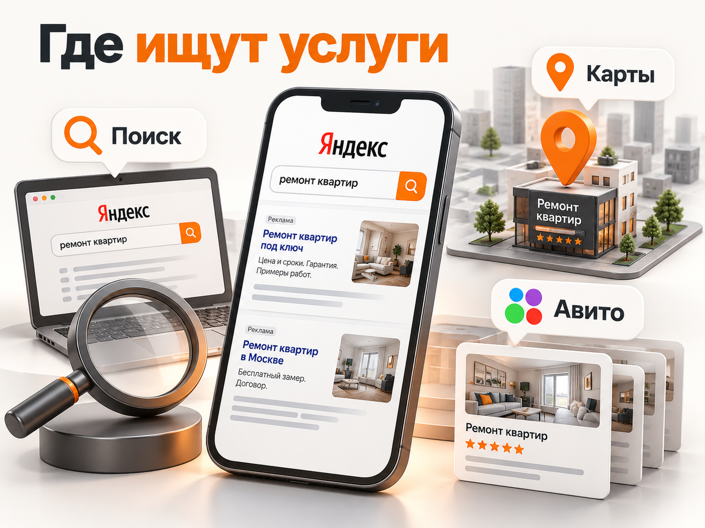

Блог о платном трафике
Реклама услуг в интернете: где рекламировать услуги и какой канал выбрать
Если нужно рекламировать услуги в интернете в России, я бы в большинстве случаев сначала проверял Яндекс Директ, Авито и Яндекс Карты. Эти площадки позволяют работать с людьми, которые уже ищут исполнителя. Для онлайн-обучения, массовых B2C-услуг и предложений без сформированного спроса дополнительно стоит рассматривать Telegram Ads, VK Рекламу и тематические сообщества.
Но выбирать канал только по популярности неправильно. Для ремонта квартир и юридических услуг подходы будут разными. Даже две компании из одной отрасли могут получать клиентов из совершенно разных источников.
Главный вопрос перед запуском рекламы: где потенциальный клиент ищет вашу услугу и сколько можно потратить, чтобы превратить его в покупателя?
Где рекламировать услуги в интернете: сравнение площадок
В 2026 году для российского бизнеса доступны несколько основных способов платного продвижения услуг. Каждый из них решает свою задачу.
| Канал | Для каких услуг подходит | Когда стоит использовать |
|---|---|---|
| Яндекс Директ | Ремонт, строительство, юристы, медицина, B2B, обучение | Когда люди самостоятельно ищут услугу |
| Авито | Бытовые услуги, мастера, ремонт, перевозки, строительство | Когда клиенты выбирают исполнителей внутри Авито |
| Яндекс Карты и 2ГИС | Клиники, автосервисы, салоны, локальные компании | Когда важны расположение, отзывы и возможность быстро связаться |
| Telegram Ads | Образование, цифровые продукты, профессиональные услуги | Когда целевая аудитория присутствует в подходящих каналах и сообществах |
| VK Реклама | Фитнес, красота, массовое обучение, мероприятия | Когда потенциального клиента можно заинтересовать предложением |
| Тематические каналы и блогеры | Сложные, экспертные и дорогие услуги | Когда для покупки требуется доверие и подробное объяснение |

Отдельно существуют площадки для поиска специалистов, например Профи.ру и YouDo. Они могут быть полезны частным исполнителям и небольшим сервисным компаниям. Но сначала нужно проверить спрос, конкуренцию и условия конкретной категории.
Для получения клиентов в долгосрочной перспективе также стоит рассматривать SEO. Оно не заменяет платную рекламу, зато помогает получать поисковый трафик без оплаты каждого отдельного клика.
Подробнее о различиях этих инструментов я писал в статье «SEO или контекстная реклама».
Какая реклама услуг эффективнее: готовый спрос или создание интереса
Для большинства услуг я разделяю рекламу на два сценария: работу с существующим спросом и привлечение аудитории, которая пока не ищет исполнителя.
Работа со сформированным спросом. Человек уже понимает, что ему необходимо, и ищет подходящую компанию.
Например:
- ремонт холодильника на дому;
- юрист по банкротству;
- установка кондиционера;
- стоматология рядом;
- бухгалтерское обслуживание ООО.
В таких ситуациях логично начинать с поисковой рекламы Яндекса, Карт или Авито, если там действительно есть спрос.
Создание интереса. Человек пока не планирует покупать услугу, но может заинтересоваться предложением после знакомства с ним.
Например, необычный образовательный курс, авторская программа тренировок или новое развлекательное мероприятие.
Для таких предложений могут подойти VK Реклама, Telegram, тематические сообщества и Рекламная сеть Яндекса.
Принципиальная разница заключается в намерении человека. Пользователь, который прямо сейчас ищет юриста, находится ближе к обращению, чем человек, который увидел предложение юридической компании во время просмотра развлекательного контента.
Но это не означает, что поисковая реклама всегда выгоднее. В конкурентных нишах стоимость привлечения клиента может быть высокой, а в некоторых проектах РСЯ или социальные сети способны обеспечить более выгодную экономику.
Вывод: если услугу уже ищут, сначала стоит проверить возможность привлечения этого спроса. Если прямого спроса мало, потребуется реклама, которая объясняет ценность предложения и формирует интерес.
Какой рекламный канал выбрать для разных видов услуг
Универсальной рекламной стратегии для всех услуг не существует. Различаются поведение покупателей, продолжительность принятия решения, средний чек и доступные рекламные площадки.
Для первоначального выбора я бы использовал следующую таблицу.
| Вид услуг | Основной канал для проверки | Дополнительный канал |
|---|---|---|
| Стоматология, медицинские клиники | Яндекс Директ, Карты | SEO, РСЯ с учётом ограничений |
| Ремонт квартир, строительство | Яндекс Директ | Авито, SEO |
| Автосервис, локальные бытовые услуги | Карты, Яндекс Директ | Авито |
| Юридические и бухгалтерские услуги | Яндекс Директ | SEO, тематические размещения |
| Онлайн-курсы и образование | Яндекс Директ при наличии спроса | Telegram Ads, VK |
| Салоны красоты, фитнес | Карты, Яндекс Директ | VK Реклама |
| Узкие профессиональные B2B-услуги | Яндекс Директ при наличии спроса | SEO, отраслевые площадки |
Это не рейтинг эффективности и не гарантия результата. Таблица показывает, какие площадки разумно проверять в первую очередь.
Например, небольшой стоматологии могут быть очень важны отзывы и расположение в Картах. А компании, которая оказывает удалённые бухгалтерские услуги по всей России, географическая близость к клиенту практически не нужна.
Для сложного B2B-проекта главную роль могут играть точные поисковые запросы, подробное описание услуг, кейсы и квалификация потенциальных клиентов.
У онлайн-школы ситуация другая. Если люди уже ищут конкретный курс, логично проверять поиск. Если продукт новый и спрос ещё не сформирован, лучшее направление для первого теста может находиться в Telegram или VK.
Яндекс Директ для рекламы услуг
Яндекс Директ я бы рассматривал одним из первых каналов для большинства услуг, которые пользователи самостоятельно ищут в интернете.
Но важно разделять разные места показа.
Поиск Яндекса
Поисковая реклама подходит для работы с уже выраженной потребностью.
Человек вводит «ремонт стиральных машин Ростов» или «юрист по арбитражным спорам» и видит предложения исполнителей.
Преимущество заключается в том, что не нужно сначала убеждать пользователя в необходимости услуги. Нужно показать ему подходящее предложение и объяснить, почему стоит выбрать конкретную компанию.
Основная сложность - конкуренция. Если рекламодателей много, стоимость клика может оказаться высокой. Поэтому важно оценивать не только спрос, но и экономику привлечения клиента.
Рекламная сеть Яндекса
В РСЯ реклама показывается на сайтах и в приложениях рекламной сети. Алгоритмы подбирают подходящую аудиторию с учётом доступных сигналов.
Для услуг РСЯ может использоваться для привлечения новой аудитории, ретаргетинга и работы с потенциальными клиентами, которые ещё выбирают решение.
Но баннерная реклама не обязательно даст такой же результат, как поиск.
Если услуга нужна человеку только после возникновения конкретной проблемы, широкие охватные кампании могут приводить много дешёвых кликов без реальных обращений.
Для сравнения этих подходов есть отдельный материал «Поиск или РСЯ в Яндекс Директе».
Что проверить перед запуском
Перед настройкой рекламных кампаний я бы оценил:
- Есть ли достаточный поисковый спрос на услугу.
- Какие предложения показывают конкуренты.
- Какую стоимость заявки бизнес может себе позволить.
- Соответствует ли посадочная страница конкретным запросам.
- Можно ли измерять звонки, формы и обращения из мессенджеров.
- Как компания обрабатывает поступающие заявки.
Если предложение слабее конкурентов, сайт неудобный, а заявки обрабатываются медленно, технически правильная настройка рекламы не гарантирует результата.
Когда стоит рекламировать услуги на Авито
Авито имеет смысл тестировать, когда потенциальные клиенты действительно привыкли выбирать исполнителя внутри площадки.
В первую очередь это касается бытовых услуг, строительства, ремонта, перевозок, клининга, фотографов, отдельных образовательных и профессиональных направлений.
Прежде чем оплачивать продвижение, нужно проверить три вещи.
Первое - наличие спроса. Есть ли на Авито подходящая категория, активные конкуренты и объявления, которые получают просмотры и контакты?
Второе - качество предложения. Достаточно ли хороши фотографии, описание, цены, отзывы и рейтинг, чтобы потенциальный клиент выбрал именно вас?
Третье - экономика обращений. Сколько стоит получить контакт и какая доля этих контактов превращается в реальный заказ?
Особенно важно не смешивать продвижение обычных объявлений внутри Авито и отдельные рекламные инструменты платформы. У них отличаются механика размещения, аудитории и задачи.
Для узких промышленных или сложных корпоративных услуг Авито может оказаться значительно менее перспективным вариантом, чем поисковая реклама.
Подробное сравнение я разобрал в материале «Авито или Яндекс Директ».
Яндекс Карты и 2ГИС для локальных услуг
Геосервисы особенно полезны компаниям, которых клиенты выбирают по расположению.
Например, автосервису, стоматологической клинике, салону красоты, фитнес-центру или ремонтной мастерской.
Человек может найти компанию непосредственно в Картах, посмотреть отзывы и фотографии, позвонить или построить маршрут. Для части клиентов посещение сайта вообще не требуется.
Поэтому перед платным продвижением нужно привести карточку организации в порядок:
- указать реальные услуги и цены;
- добавить качественные фотографии;
- заполнить график работы;
- проверить адрес и контакты;
- работать с отзывами;
- обеспечить удобную запись или связь.
Платное продвижение может повысить заметность организации, но не заменит хорошую карточку и положительную репутацию.
Для локальных услуг я бы оценивал не только показы и переходы из Карт, но и звонки, записи, фактические посещения и продажи.
Подробнее о механике продвижения можно прочитать в статье «Реклама в Яндекс Картах».
Telegram Ads для продвижения услуг
Telegram Ads имеет смысл использовать, когда можно найти достаточно большую и подходящую аудиторию внутри Telegram.
Например, профессиональное обучение, цифровые услуги, экспертные продукты и некоторые массовые образовательные направления можно продвигать в тематическом окружении.
Но наличие большой аудитории Telegram само по себе не означает, что любой бизнес сможет получать там заявки.
Я бы начинал с проверки трёх вопросов:
1. Есть ли каналы и другие доступные рекламные размещения, связанные с тематикой услуги? 2. Понимает ли эта аудитория ценность предложения? 3. Куда человек попадёт после рекламы и как будет двигаться к покупке?
В официальной рекламной платформе Telegram есть ограничения на рекламируемые ссылки и требования к посадочным объектам внутри мессенджера. Поэтому воронку нужно проектировать с учётом конкретного рекламного инструмента.
Для некоторых услуг удобнее вести человека сначала в канал или бот, где он узнаёт о предложении подробнее.
При запуске через посредника необходимо отдельно учитывать комиссии, налоги и другие расходы. Они влияют на общую стоимость привлечения.
Если услуга сложная, а аудитория небольшая, прямые размещения в тематических Telegram-каналах иногда могут оказаться более подходящим инструментом, чем короткие рекламные объявления.
Когда стоит запускать VK Рекламу для услуг
VK Реклама подходит прежде всего тем услугам, которыми можно заинтересовать достаточно широкую аудиторию.
Например, фитнес, красота, образовательные мероприятия, творческие занятия и развлекательные услуги.
В отличие от поисковой рекламы, в социальной сети человек обычно не формулирует непосредственный запрос на услугу.
Поэтому результат сильнее зависит от креатива, предложения, выбранной аудитории и воронки.
Для VK особенно важны понятный визуальный образ услуги, конкретная выгода и низкий порог первого обращения.
Но оценивать результат только по количеству заполненных лид-форм опасно. Недорогой лид ещё не означает заинтересованного клиента.
Для сложных B2B-услуг или направлений с узким сформированным спросом я бы не выбирал VK первым каналом без дополнительных оснований.
Реклама у блогеров и на профессиональных площадках
Для некоторых услуг покупатель выбирает прежде всего специалиста и его репутацию.
Человек хочет увидеть примеры работы, квалификацию, подход и результаты. Особенно это заметно в экспертных, образовательных и дорогих профессиональных услугах.
В таких случаях полезными могут оказаться тематические Telegram-каналы, блогеры, отраслевые сообщества и площадки специалистов.
Преимущество таких размещений заключается в возможности подробно объяснить предложение и использовать доверие существующей аудитории.
Главный недостаток - непредсказуемость.
Один рекламный пост может принести много качественных обращений, а похожее размещение в другом канале практически ничего не дать.
Поэтому такие размещения нужно тестировать отдельно, заранее определяя, как будут учитываться обращения и расходы.
Как выбрать рекламный канал для своей услуги: 5 шагов
Начинать я бы рекомендовал не с регистрации в рекламном кабинете, а с проверки бизнеса и спроса.
1. Определить, кто и как выбирает услугу
Человек может искать исполнителя срочно, выбирать компанию рядом с домом или сравнивать предложения несколько недель.
Для срочного ремонта и длительного корпоративного консалтинга нужны разные рекламные подходы.
2. Проверить поисковый спрос
Нужно посмотреть, какие запросы вводят потенциальные клиенты, сколько их в нужном регионе и какие рекламодатели уже работают в выдаче.
Если запросы коммерческие и спрос достаточно большой, поиск Яндекса становится одним из первых вариантов для тестирования.
3. Проверить альтернативные площадки
Для бытовых услуг стоит изучить Авито, для локальных компаний - Карты, для массового обучения - VK и Telegram.
Проверять площадки нужно по реальному поведению аудитории, а не только по размеру самой платформы.
4. Рассчитать допустимую стоимость клиента
Нужно понимать, сколько денег бизнес зарабатывает на заказе и какую часть этой суммы готов потратить на привлечение покупателя.
Без такого ограничения невозможно уверенно определить, какую рекламу считать выгодной.
5. Запустить ограниченный тест и проверить продажи
При небольшом бюджете я бы не распределял деньги сразу между пятью рекламными системами.
Разумнее начать с одного основного направления, собрать достаточно данных и проверить не только обращения, но и их качество.
Если канал показывает приемлемую стоимость клиента, его можно развивать и масштабировать. Если нет, сначала нужно разобраться в причинах, а не просто переносить бюджет на следующую площадку.
Как рассчитать бюджет на рекламу услуг
Бюджет на рекламу услуг зависит от стоимости трафика, конверсии в заявку и количества клиентов, которое компания рассчитывает привлечь.
Единой суммы, подходящей любой нише, не существует.
Для предварительного расчёта можно использовать следующие формулы:
Рекламный бюджет = количество кликов × средняя стоимость клика.
CPL = рекламный бюджет / количество заявок.
Стоимость клиента (CAC) = расходы на привлечение / количество новых клиентов.
Для примера возьмём условную рекламную кампанию.
| Показатель | Значение |
|---|---|
| Рекламный бюджет | 20 000 ₽ |
| Средняя стоимость клика | 100 ₽ |
| Количество кликов | 200 |
| Конверсия в заявку | 5% |
| Получено заявок | 10 |
| Конверсия заявки в продажу | 20% |
| Получено клиентов | 2 |
| CPL | 2000 ₽ |
| Стоимость клиента по рекламным расходам | 10 000 ₽ |
Это учебный расчёт, а не средние показатели рынка и не прогноз для конкретной ниши.
В примере из 200 посетителей десять оставили заявку, а двое стали клиентами. При рекламных расходах 20 000 ₽ стоимость привлечения одного клиента составила 10 000 ₽.
Но если компания зарабатывает на первом заказе меньше этой суммы, реклама может оказаться убыточной.
Нужно учитывать маржинальность услуги, повторные заказы, расходы на настройку и ведение рекламы, а также другие затраты.
Для расчёта под конкретный проект на сайте есть калькулятор рекламного бюджета и калькулятор стоимости лида.
Реальные примеры стоимости заявок на услуги
Стоимость заявки зависит от отрасли, региона, конкуренции, рекламного предложения и того, какое действие считается лидом.
Поэтому я бы не ориентировался на обещания вроде «заявки на любые услуги от 300 рублей».
Показатели разных проектов могут отличаться в несколько раз. Даже внутри одной рекламной кампании стоимость заявки меняется при изменении предложения и качества трафика.
Сеть химчисток в Санкт-Петербурге
В кейсе продвижения сети химчисток использовался Яндекс Директ.
На старте стоимость заявки составляла примерно 900‑1100 ₽. После работы с предложением и оптимизации рекламы на последней неделе теста получили 66 обращений по 543 ₽.
Средняя цена отслеживаемой цели за месяц составила 767 ₽.
Важный нюанс: в эту цифру не включались все возможные обращения. Например, звонки и некоторые другие контакты учитывались отдельно.
Кейс показывает, насколько сильно стоимость заявки может зависеть от рекламного предложения и методики учёта.
Услуги Trade-in недвижимости в Екатеринбурге
В проекте по обмену старой квартиры на новостройку за рассматриваемые месяцы 2025 года при рекламном расходе 147 220 ₽ получили 83 заявки.
Средняя стоимость заявки составила 1774 ₽.
Из 83 обращений квалификацию прошли 70. Стоимость квалифицированной заявки оказалась выше, примерно 2103 ₽.
В этом проекте основной объём обращений пришёл из РСЯ, а поисковая реклама обходилась дороже.
Это хороший пример того, почему нельзя автоматически считать поиск самым выгодным каналом.
Оба кейса показывают результаты конкретных проектов, а не среднерыночную стоимость заявок в 2026 году. Их полезно использовать для понимания рекламной механики, но не как готовый прогноз для другого бизнеса.
И ещё одно ограничение: стоимость заявки не равна стоимости привлечённого клиента. Для последнего показателя нужно знать, сколько обращений действительно завершились продажами.
Почему рекламная площадка - только часть результата
Одна из частых ошибок бизнеса заключается в том, что плохие продажи пытаются исправить постоянной сменой рекламных площадок.
Запустили Яндекс Директ - дорого. Попробовали Авито - мало обращений. Запустили VK - нецелевые лиды.
Но причиной может быть не сам рекламный канал.
Для получения продажи недостаточно привести человека на сайт. Нужно, чтобы предложение соответствовало его потребности, посадочная страница вызывала доверие, а компания могла быстро обработать обращение.
Например, потенциальный клиент ищет ремонт квартиры под ключ, а попадает на страницу с общим описанием строительной компании без примеров работ, стоимости и условий.
Другой пример: человек отправляет заявку, но менеджер связывается с ним только на следующий день.
В обоих случаях реклама могла привести подходящего клиента, однако бизнес не смог превратить обращение в продажу.
Поэтому перед сменой канала стоит проверить всю воронку, включая качество заявок и работу отдела продаж.
Как понять, какая реклама услуг оказалась эффективнее
Сравнивать рекламные площадки только по стоимости клика или заявки неправильно. Для бизнеса важнее стоимость привлечённого клиента и его экономическая ценность.
Рассмотрим условный пример двух рекламных каналов.
| Показатель | Канал А | Канал Б |
|---|---|---|
| Расходы на рекламу | 50 000 ₽ | 40 000 ₽ |
| Количество заявок | 50 | 20 |
| Стоимость заявки | 1000 ₽ | 2000 ₽ |
| Получено клиентов | 2 | 8 |
| Стоимость клиента | 25 000 ₽ | 5000 ₽ |
На первый взгляд канал А кажется более эффективным: заявок больше, и каждая обходится в два раза дешевле.
Но канал Б привёл в четыре раза больше клиентов при меньших расходах.
В результате стоимость клиента в канале Б оказалась в пять раз ниже.
Именно поэтому при анализе рекламы услуг важно учитывать:
- CPL, стоимость обычной заявки;
- долю целевых и квалифицированных обращений;
- конверсию заявки в продажу;
- стоимость привлечённого клиента;
- выручку от рекламных клиентов;
- маржинальность и окупаемость рекламы.
Для длинных B2B-продаж, строительства и дорогих профессиональных услуг особенно полезна связь рекламной аналитики с CRM.
Она позволяет оценивать не только заявки, но и реальные договоры, выручку и этапы продаж.
Где лучше рекламировать услуги в 2026 году: итоговый выбор
Для большинства компаний, оказывающих услуги, я бы рекомендовал сначала проверить существующий спрос в Яндексе. Если услуга активно представлена на Авито, протестировать эту площадку. Для локального бизнеса обязательно оценить Карты и другие геосервисы.
Telegram Ads и VK Реклама могут быть хорошими дополнительными или даже основными каналами, если продукт подходит для привлечения аудитории через контент и рекламные креативы.
Но окончательное решение должно приниматься не по размеру аудитории площадки и не по количеству рекламных заявок.
Лучшая реклама услуг - та, которая стабильно приводит подходящих клиентов по стоимости, приемлемой для конкретного бизнеса.
Поэтому начинать стоит с анализа спроса, предложения и экономики услуги, а после запуска оценивать реальные продажи.
Если требуется помощь с выбором рекламного канала, настройкой Яндекс Директа или анализом существующей рекламы, на моём сайте можно посмотреть услуги, условия работы и примеры реализованных проектов.